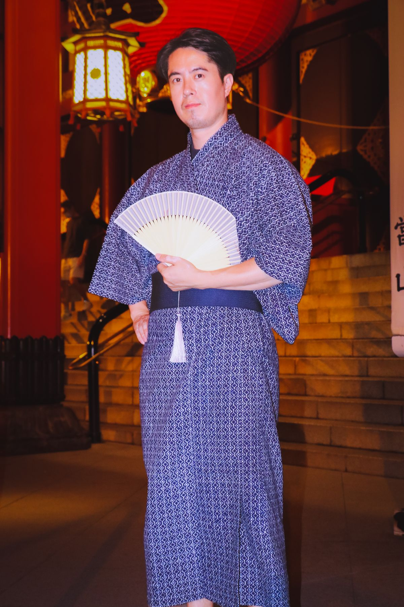

Okamoto-ya inn · Kinosaki Onsen · 24 garments
Twenty-four yukata for a hot-spring inn
The ask. Okamoto-ya is a small ryokan in Kinosaki Onsen, where guests walk between the public baths in the inn's yukata — the garment is the inn's face on the street. Their bulk-bought sets faded to grey in a year and tore at the collar. They wanted twenty-four that would hold their colour through commercial laundry and still look like one family on the street at night.
What I did. Katazome seigaiha on a plain-weave cotton chosen for washing, not for the rail; seams double-stitched at the collar and sleeve, the two places an inn yukata dies first; sizes S to LL with the size woven into the collar tape, so the laundry sorts by sight. One sample garment was washed twenty times before the other twenty-three were cut.
The outcome. Two full seasons — summers and the winter bath season between. Three of the twenty-four needed replacing, all at the collar, all replaced free. This spring the inn ordered twelve more, in the same bolt, for a new annexe.

"Guests ask where the yukata come from. Nobody has ever asked that about the ones we bought in bulk. Yui-san's survive our laundry and our winters."